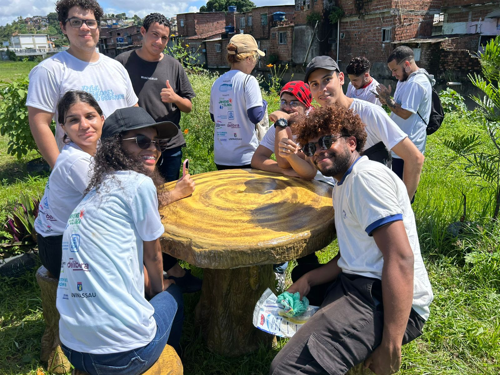

Conheça a origem, missão e valores do coletivo que nasceu da pandemia para lutar pela dignidade ambiental e social das periferias do Recife.
Em meio à pandemia de Covid-19, moradores das margens do Rio Beberibe enfrentavam uma realidade duplamente cruel: além da ameaça do vírus, conviviam com alagamentos, esgoto a céu aberto e lixo acumulado — resultado de décadas de abandono pelo poder público.
Foi nesse contexto que um grupo de moradores, ativistas e jovens da periferia decidiu agir. Com mutirões improvisados, redes sociais e muita garra, nasceu o Coletivo Salve Beberibe — um movimento popular pela recuperação ambiental e pela justiça social no entorno do segundo maior rio de Recife.
Hoje, quatro anos depois, o coletivo já removeu mais de duas toneladas de lixo, plantou centenas de mudas nativas, recebeu duas homenagens da Câmara Municipal do Recife e levou a voz das margens do Beberibe até a COP 30, em Belém do Pará.

Promover a recuperação socioambiental do Rio Beberibe e de suas comunidades ribeirinhas, combatendo o racismo ambiental por meio de ações coletivas, educação e pressão política.
Um Rio Beberibe limpo, revitalizado e cercado de comunidades saudáveis e empoderadas — onde natureza e humanidade coexistam com dignidade na cidade do Recife.
Solidariedade, justiça ambiental, antirracismo, horizontalidade, transparência e amor ao território. Acreditamos que cuidar do rio é cuidar das pessoas.
De uma ideia na pandemia a um coletivo reconhecido nacional e internacionalmente.
Moradores e ativistas se unem nas redes sociais durante a pandemia e realizam os primeiros mutirões de limpeza nas margens do Beberibe.
Início das ações de restauração vegetal com espécies nativas. A rede de voluntários cresce para mais de 20 pessoas engajadas.
O coletivo é reconhecido pela primeira vez pela Câmara Municipal do Recife pelo seu trabalho socioambiental com as comunidades ribeirinhas.
Segunda homenagem da Câmara Municipal. O coletivo amplia parcerias com universidades e organizações de direitos ambientais de Pernambuco.
Representantes do Salve Beberibe participam da Conferência do Clima — COP 30 em Belém do Pará, levando a realidade das periferias do Recife ao debate climático mundial.